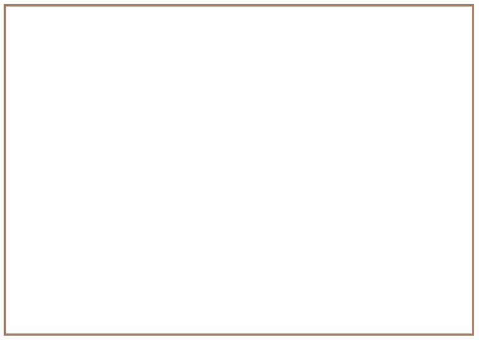
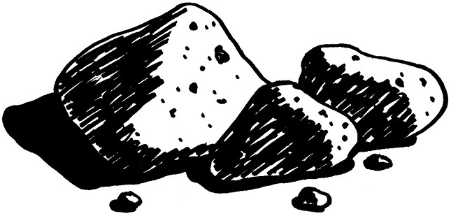
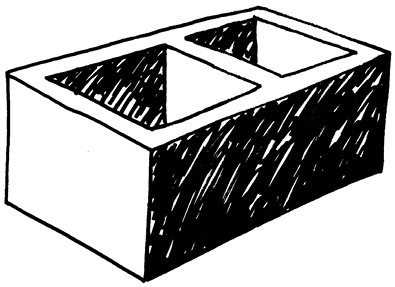

<div class="container">
  <div id="contents" class="col-md-12 main-content"><h1 xmlns="http://www.w3.org/1999/xhtml" id="toc-id-0">Shells, frames and solids</h1>
    <p xmlns="http://www.w3.org/1999/xhtml" class="x--Body-opener">Right now, you are sitting at a desk
    on a chair. Soon, you will write things in a book with a pen or
    a pencil. The book rests on your desk. All these objects are
    called structures. If you look around the classroom, you will
    see many other structures. For example, the classroom and the
    school buildings are structures.</p>

    <p xmlns="http://www.w3.org/1999/xhtml" class="x--Body-opener">In this chapter, you will learn about
    natural and man-made structures. You will also learn about
    shell structures, solid structures and frame structures.</p>

<figure xmlns="http://www.w3.org/1999/xhtml">

<figcaption>Figure 1: Is a piece of dough or wet clay
    a structure?</figcaption>
    
   </figure>
    
    <figure xmlns="http://www.w3.org/1999/xhtml">
    <figcaption>Figure 2: What does it mean to construct something?
</figcaption>
</figure>

<figure xmlns="http://www.w3.org/1999/xhtml">
<figcaption>Figure 3: What does it mean to construct something?
</figcaption>
</figure>

<h2 xmlns="http://www.w3.org/1999/xhtml" id="toc-id-1">Things called structures</h2>

    <p xmlns="http://www.w3.org/1999/xhtml" class="x--Body-Text para-style-override-1">Look around you
    in the classroom. Choose any object, for example a cupboard, a
    table, a chair, a basket, a bottle, a shoe, a pencil case or a
    brick. Then answer the following questions about this
    object.</p>

<ol xmlns="http://www.w3.org/1999/xhtml"><li>
    <p class="x--Body-investigation-hanging"> What is this object
    called?</p> <hr/></li>
    <li>
    <p class="x--Body-investigation-hanging"> What is it used
    for?</p> <hr/></li>
    <li>
    <p class="x--Body-investigation-hanging"> Can it be used to
    keep certain things in one place, so that they do not lie
    around all over the classroom?</p> <hr/></li>
    <li>
    <p class="x--Body-investigation-hanging"> Can it be used to
    protect something, for example to protect it from sunlight or
    wind?</p> <hr/></li>
    <li>
    <p class="x--Body-investigation-hanging"> Is it used to
    support something?</p>
    
    <figure>
    
    <figcaption>Figure 4: The chair supports the person sitting on it.</figcaption>
    </figure>

    <p class="x--Body--above">This man is sitting comfortably on
    the chair. You can say that the chair <b>supports</b> the man and keeps him
    from falling off.</p></li>

    <li>
    <p class="x--Body-investigation-hanging"> Describe two other
    objects that are different from chairs, but are also used to
    support something or someone.</p> <hr/></li>
    </ol>
    
    <figure xmlns="http://www.w3.org/1999/xhtml">
    
    <figcaption>Figure 5: The bridge spans the stream.</figcaption>
    </figure>
    
    <p xmlns="http://www.w3.org/1999/xhtml" class="x--Body--above">A bridge that crosses a stream or a
    river from one end to the other helps people to cross it
    without getting wet. You can say that the bridge <b>spans</b> the stream.</p>

   <h3 xmlns="http://www.w3.org/1999/xhtml" class="Head-investigation--after-b-head- para-style-override-5">A small business situation</h3>

    <p xmlns="http://www.w3.org/1999/xhtml" class="x--Body-Text para-style-override-4">Suppose you want
    to set up a stall at a market to sell food such as sugar,
    flour, maize, rice, eggs, beans and cooking oil. So you buy one
    large bag each of sugar, flour, maize and rice, and a 20-litre
    drum of cooking oil.</p>

    <figure xmlns="http://www.w3.org/1999/xhtml"><div class="frame-2"></div>

        <figcaption> Figure 6</figcaption>
        </figure>
        
        <ol xmlns="http://www.w3.org/1999/xhtml"><li>
    <p class="x--Body-investigation-hanging"> Make a list of the
    things you can see in this picture.</p> <hr/></li>
    <li><p class="x--Body-investigation-hanging"> What else do you
    need to set up your stall before you can sell the goods?</p><hr/></li>
    <li>
    <p class="x--Body-investigation-hanging">What type of
    container will the eggs you sell come in?</p><hr/>
    
    <figure>
    <figcaption>Figure 7</figcaption>
    </figure>
    </li>
    <li>
    <p class="x--Body-investigation-hanging"> Why are eggs
    packed in special containers such as the one you see in this
    picture?</p><hr/></li>
    <li>
    <p class="x--Body-investigation-hanging"> If you wanted to
    make a table from the two empty crates, what else would you
    need?</p><hr/></li>
    <li>
    <p class="x--Body-investigation-hanging"> Suppose a woman
    wants to buy 2 kg of flour from you. Will you ask her to hold
    out her hands so that you can put the flour in her hands, or
    will you make another plan?</p><hr/></li>
    <li>
    <p class="x--Body-investigation-hanging--1-3-"> What will you
    use as <b>containers</b>
    when you sell maize, rice, sugar and flour to people?</p>

    <div class="aside">
      <p class="Body-box-no-indent">A <b>container</b> is something that you
      use to keep things together in one place, like a paper bag
      for rice.</p>
    </div></li>
    <li>
    <p class="x--Body-investigation-hanging">What will you use
    as a container to sell oil?</p> <hr/></li>
    <li>
    <p class="x--Body-investigation-hanging--1-3-"> What did you
    decide to use to span the two crates to form a table, when you
    answered question 5 above?</p>

    <div class="aside">
      <p class="Body-box-no-indent">The table you will make, the
      crates that you use to make the table, the containers in
      which you get the eggs and the plastic bottles in which you
      sell the oil are all called <b>structures</b>.</p>

      <p class="Body-box-no-indent">There are many other things
      that are also called structures.</p>
    </div></li>
    <li><p class="x--Body-investigation-hanging para-style-override-1">
     How will you protect yourself and the goods you sell when
    it rains? Draw the <b>structure</b> that you will use for
    protection.</p>

 <figure><div class="Basic-Text-Frame"></div>  </figure> 
        
        <p class="x--Body-Text para-style-override-6">People design and
    make structures for different reasons. Many structures can help
    you to do one or more of the things below.</p>

    <div class="note">
      <p>To <b>contain</b> or hold something, so that it is not all over the place, and to keep 
	it apart from other things.<br/>
	To <b>protect</b> something, so that it is not damaged.<br/>
	To <b>support</b> something and hold it up.<br/>
	To <b>span</b> the space between two objects so that they are connected. </p>
    </div></li>

    <li><p class="x--Body-investigation-hanging"> Can you think of a
    structure that can do more than one of these things?</p><hr/></li>
    </ol>
    
    <h2 xmlns="http://www.w3.org/1999/xhtml" id="toc-id-2">Man-made and natural structures</h2>

    <figure xmlns="http://www.w3.org/1999/xhtml">

    <figcaption>Figure 8: A termite mound</figcaption>
    </figure>
    
    <p xmlns="http://www.w3.org/1999/xhtml" class="x--Body--above">Have you ever looked closely at a
    termite mound? It really is wonderful how it contains and
    protects termites and their food against the weather and
    against their enemies. There is a whole city in there!</p>

    <p xmlns="http://www.w3.org/1999/xhtml" class="x--Body-indent">The material (soil) is reworked by
    them to make it harder so that it can withstand shocks, while
    its shape allows rain to flow off it easily. It is an example
    of a natural structure and it is not man-made.</p>

    <p xmlns="http://www.w3.org/1999/xhtml" class="x--Body-indent">Man-made shelters have the same
    functions - to protect people and their
    belongings. Before man-made shelters such as houses and tents
    existed, people used caves or trees for protection.</p>

    <p xmlns="http://www.w3.org/1999/xhtml" class="x--Body-indent">There are lots of different
    structures around us. Some are built by us and some are already
    there in nature. The termite mound is a structure, but it is
    not built by people. We call structures like that <b>natural structures</b>.</p>

    <p xmlns="http://www.w3.org/1999/xhtml" class="x--Body-indent">A cup that you use to drink tea or
    coffee is also a structure. It is a <b>man-made structure</b> because it
    was made by people.</p>

    <p xmlns="http://www.w3.org/1999/xhtml" class="x--Body-indent">Look at the structures on the next
    two pages, then classify them as <b>man-made</b>
 <b>structures</b> or <b>natural structures.</b></p>

<figure xmlns="http://www.w3.org/1999/xhtml">
<figcaption>Figure 9</figcaption>
</figure>

<figure xmlns="http://www.w3.org/1999/xhtml"><div class="frame-2"></div>

<figcaption>Figure 10</figcaption>
</figure>

<h3 xmlns="http://www.w3.org/1999/xhtml" class="Head-investigation--after-b-head- para-style-override-5">Classify structures</h3>
<ol xmlns="http://www.w3.org/1999/xhtml"><li>
    <p class="x--Body-investigation-hanging para-style-override-9">
     Classify the 12 structures on the previous two pages as
    man-made or as natural structures.</p> 

    <table id="table-3" class="No-Table-Style table-style-override-1"><tbody><tr class="Row-Column-32"><td class="None cell-style-override-3">
            <p class="x--Body-Text para-style-override-10">Man-made
            structures</p>
          </td>

          <td class="None cell-style-override-3">
            <p class="x--Body-Text"><span class="char-style-override-1">Natural</span> <span class="char-style-override-1">structures</span></p>
          </td>
        </tr><tr class="Row-Column-32"><td class="None cell-style-override-3"/>

          <td class="None cell-style-override-3"/>
        </tr><tr class="Row-Column-32"><td class="None cell-style-override-3"/>

          <td class="None cell-style-override-3"/>
        </tr><tr class="Row-Column-32"><td class="None cell-style-override-3"/>

          <td class="None cell-style-override-3"/>
        </tr><tr class="Row-Column-32"><td class="None cell-style-override-3"/>

          <td class="None cell-style-override-3"/>
        </tr><tr class="Row-Column-32"><td class="None cell-style-override-3"/>

          <td class="None cell-style-override-3"/>
        </tr><tr class="Row-Column-32"><td class="None cell-style-override-3"/>

          <td class="None cell-style-override-3"/>
        </tr><tr class="Row-Column-32"><td class="None cell-style-override-3"/>

          <td class="None cell-style-override-3"/>
        </tr><tr class="Row-Column-32"><td class="None cell-style-override-3"/>

          <td class="None cell-style-override-3"/>
        </tr></tbody></table></li>
   <li> <p class="x--Body-investigation-hanging"> What other natural
    structures can you think of?</p> <hr/></li>
    <li>
    <p class="x--Body-investigation-hanging"> Name any three
    man-made structures that provide protection.</p><hr/></li>
    <li>
    <p class="x--Body-investigation-hanging"> Name any three
    man-made structures that provide support.</p><hr/></li>
    <li>
    <p class="x--Body-investigation-hanging"> Name any three
    man-made structures that contain things.</p><hr/></li>
    </ol>
    
    <h2 xmlns="http://www.w3.org/1999/xhtml" id="toc-id-3">Types of structures</h2>

    <p xmlns="http://www.w3.org/1999/xhtml" class="x--Body-Text">There are three basic types of
    structures: <b>shell</b>
    structures, <b>frame</b>
    structures and <b>solid</b>
    structures. But some structures are a combination.</p>

    <p xmlns="http://www.w3.org/1999/xhtml"> <b>Shell
    structures</b></p>

    <p xmlns="http://www.w3.org/1999/xhtml" class="x--Body-Text">Most containers used to hold liquids or
    small solids are shell structures. Examples are coffee mugs,
    bowls for peanuts and bags for rice or sugar.</p>

    <p xmlns="http://www.w3.org/1999/xhtml" class="x--Body-Text">The strength of a shell structure is on
    its outside - in the shell.</p>

    <p xmlns="http://www.w3.org/1999/xhtml" class="x--Body-Text">Chicken eggs and empty ostrich eggs are
    examples of <b>natural</b> <b>shell structures</b>.
    Soccer balls or balloons are <b>man-made</b> <b>shell structures</b>.</p>

    <figure xmlns="http://www.w3.org/1999/xhtml"><figcaption>Figure 11: Ostrich eggs were used as water 
containers by the San people. 
</figcaption>
</figure>

<figure xmlns="http://www.w3.org/1999/xhtml">
<figcaption>Figure 12: Bees store their honey in honeycombs.
</figcaption>
</figure>

<figure xmlns="http://www.w3.org/1999/xhtml">
<figcaption>Figure 13: A rubber tyre is a shell structure. 
</figcaption>
</figure>

<figure xmlns="http://www.w3.org/1999/xhtml">
<figcaption>Figure 14: A coffee mug is a shell structure.
</figcaption>
</figure>

<p xmlns="http://www.w3.org/1999/xhtml" class="x--Body-Text para-style-override-10"><b>Frame
    structures</b></p>

    <p xmlns="http://www.w3.org/1999/xhtml" class="x--Body-Text">A frame structure consists of different
    parts. These parts are combined in such a way to make the
    structure strong. A ladder and a bicycle are good examples of
    man-made frame structures. Spiderwebs are natural frame
    structures.</p>

<figure xmlns="http://www.w3.org/1999/xhtml">
<figcaption>Figure 15: This roof frame is a frame
        structure made from wooden planks, a natural material. The
        planks support the roof.</figcaption>
        </figure>
        
        <figure xmlns="http://www.w3.org/1999/xhtml">
        <figcaption>Figure 16: A bicycle frame consists
        of different metal pipes.</figcaption>
        </figure>
        
        <figure xmlns="http://www.w3.org/1999/xhtml">
        <figcaption>Figure 17: A plant leaf. Look at its
        veins. They form the frame of the leaf.</figcaption>
        </figure>
        
        <p xmlns="http://www.w3.org/1999/xhtml" class="x--Body-Text para-style-override-10"><b>Solid
    structures</b></p>

    <p xmlns="http://www.w3.org/1999/xhtml" class="x--Body-Text para-style-override-13">Structures like
    rocks, bricks and cement poles are solid. They do not consist
    of different parts with open spaces between them. A stone is a
    natural solid structure and is one piece of material. A brick
    is a man-made solid structure.</p>

<figure xmlns="http://www.w3.org/1999/xhtml">
 <figcaption>Figure 18: Stones</figcaption>
</figure>
        <figcaption xmlns="http://www.w3.org/1999/xhtml">Figure 19: Table Mountain</figcaption>
        
        <figcaption xmlns="http://www.w3.org/1999/xhtml">Figure 20: A cement brick</figcaption>
        
        <figcaption xmlns="http://www.w3.org/1999/xhtml">Figure 21: A teaspoon</figcaption>
        <b xmlns="http://www.w3.org/1999/xhtml">Combined
    structures</b><li xmlns="http://www.w3.org/1999/xhtml" class="x--Body-text-bullet"> The
      bricks, roof tiles or roof sheets are all solid
      structures.</li>

      <li xmlns="http://www.w3.org/1999/xhtml" class="x--Body-text-bullet"> The
      different rooms of the house is a shell structure.</li>

      <li xmlns="http://www.w3.org/1999/xhtml" class="x--Body-text-bullet">The
      framework on which the roof tiles or sheets rest are called
      roof trusses, and are frame structures.</li>
    <li xmlns="http://www.w3.org/1999/xhtml">
    <p class="x--Body-investigation-hanging"> Classify the
    following structures in the table below as <b>shell, frame or solid
    structures:</b></p> 

    <p class="x--Body-investigation-hanging">a house; electricity
    pylon; tortoise shell; cellphone tower; human skull; brick;
    garden chair; spiderweb and dog kennel; wooden logs; chicken
    eggs and rocks. You can look at pictures of these structures on
    the previous pages.</p> </li>
	
    <li xmlns="http://www.w3.org/1999/xhtml">
    <p class="x--Body-investigation-hanging"> Write more examples
    of each of the different kinds of structures in the table.</p>

    <table id="table-4" class="No-Table-Style table-style-override-1"><tbody><tr class="Row-Column-47"><td class="None">
            <p class="x--Body-Text para-style-override-10">Shell
            structures</p>
          </td>

          <td class="None">
            <p class="x--Body-Text para-style-override-10">Frame
            structures</p>
          </td>

          <td class="None">
            <p class="x--Body-Text para-style-override-10">Solid
            structures</p>
          </td>
        </tr><tr class="Row-Column-48"><td class="None"/>

          <td class="None"/>

          <td class="None"/>
        </tr><tr class="Row-Column-48"><td class="None"/>

          <td class="None"/>

          <td class="None"/>
        </tr><tr class="Row-Column-48"><td class="None"/>

          <td class="None"/>

          <td class="None"/>
        </tr><tr class="Row-Column-48"><td class="None"/>

          <td class="None"/>

          <td class="None"/>
        </tr><tr class="Row-Column-48"><td class="None"/>

          <td class="None"/>

          <td class="None"/>
        </tr><tr class="Row-Column-48"><td class="None"/>

          <td class="None"/>

          <td class="None"/>
        </tr><tr class="Row-Column-48"><td class="None"/>

          <td class="None"/>

          <td class="None"/>
        </tr><tr class="Row-Column-48"><td class="None"/>

          <td class="None"/>

          <td class="None"/>
        </tr><tr class="Row-Column-48"><td class="None"/>

          <td class="None"/>

          <td class="None"/>
        </tr><tr class="Row-Column-48"><td class="None"/>

          <td class="None"/>

          <td class="None"/>
        </tr></tbody></table>
        </li> <div xmlns="http://www.w3.org/1999/xhtml" class="frame-2"></div>

        <figcaption xmlns="http://www.w3.org/1999/xhtml">Figure 22: A water tank on a solid
        brick stand</figcaption>
        <div xmlns="http://www.w3.org/1999/xhtml" class="Basic-Text-Frame"></div>
 
        <figcaption xmlns="http://www.w3.org/1999/xhtml">Figure 23: A water tank on a
        metal-frame stand</figcaption>
        <li xmlns="http://www.w3.org/1999/xhtml"><p class="x--Body-investigation-hanging"> Name all the
    structures that you can see in the pictures above. In each
    case, say what kind of structure it is, and what its purpose
    is.</p><hr/></li>
    
    <li xmlns="http://www.w3.org/1999/xhtml"><p class="x--Body-investigation-hanging"> Compare the support
    structures for the two water tanks.</p>
    
    <ol><li>
    <p class="x--Body-investigation-hanging-a-"> Which stand is
    a solid structure and which stand is a frame structure?</p><hr/></li>
	 <li>
    <p class="x--Body-investigation-hanging-a-">Which stand do
    you think is stronger of the two? Explain why you think so.</p><hr/></li>
    </ol></li>
    <li xmlns="http://www.w3.org/1999/xhtml"><p class="x--Body-investigation-hanging"> Make a free-hand
    sketch of the metal frame stand and the tank here:</p></li> <div xmlns="http://www.w3.org/1999/xhtml" class="Basic-Text-Frame"></div>  
  </div>
</div>